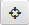
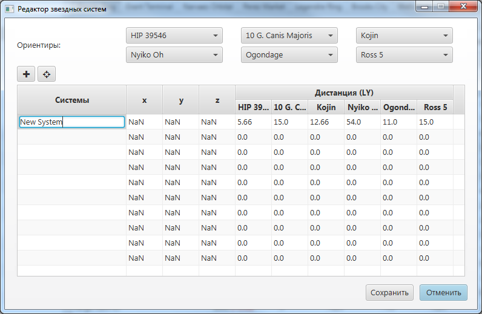
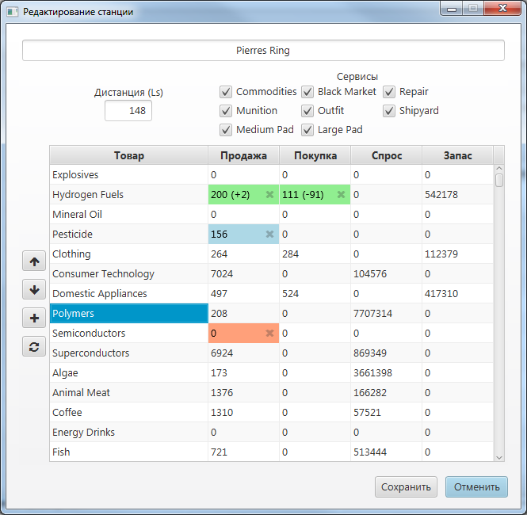
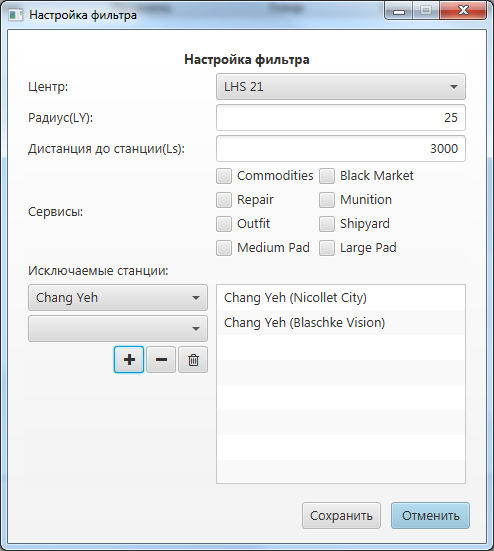

Trader
Программа для анализа цен и планирования маршрута в Elite:Dangerous.
Основные возможности:
- Удобный редактор станции
- Дополнительное окно помощника, для отображения следующей цели маршрута
- Определение максимальной, средней и минимальной цены на товар во вселенной
- Поиск наиболее прибыльных маршрутов, с учетом запасов товара на складе, расстояния, затраченного времени
- Поиск оптимальных маршрутов для выполнения миссий по доставке/поставки товара
- Настраиваемая система фильтрации станций и рынков
- Поиск ближайшего продавца, либо покупателя конкретного товара
- Поддержка Русской и Английской локализации
- Поддержка Elite Dangerous: Horizons 2.1
- Импорт данных с сайта Maddavo's Market Share
- Поддержка EDCE API
Документация
Добавление звездной системы
Для добавления новой системы необходимо:
- Выбрать в меню Правка пункт Добавить систему
- Выбрать 6 систем - ориентиров, на основе которых будут определятся координаты системы
- Ввести название системы в колонку Системы и занести рассояния от добавлямой системы до систем-ориентиров
- Нажать кнопку расчета координат 
- Проверить полученные координаты на корректность, если координаты явно лежат в другой области галактической карты, то
поменять одну систему-ориентир на другую и повторить расчет
- Нажать кнопку Сохранить

Добавление/Редактирование станции
Для добавления новой станции, либо редактирования уже добавленной, необходимо:
- На вкладке Системы выбрать систему, в которой находится станция.
- Выбрать редактируемую станцию, нажав кнопку с ее названием.
- Выбрать в меню Правка пункт Редактировать станцию, либо Добавить станцию
- В открывшемся окне заполнить необходимые поля
- Нажать кнопку Сохранить

Настройка фильтра
Для настройки фильтрации при поиске лучших маршрутов и продавцов товаров, необходимо:
- Выбрать в меню Настройки пункт Фильтр
- Заполнить необходимые параметры:
- Центр и радиус -
- системы, находящиеся за пределом сферы, c заданным центром и радиусом, будут исключены из анализа
- Дистанция до станции -
- станции, находящиеся на дистанции, превышающей заданную дистанцию, будут исключены из анализа
- Сервисы -
- в анализ будут включены только станции с заданными сервисами. Если ни один сервис не выбран,
то данный параметр не учитывается
- Исключаемые станции -
- список конкретных станций, исключаемых из анализа
- Нажать кнопку Сохранить

Если вы хотите перед импортом удалить добавленные ранее системы или станции, то выберите соответствующий пункт
в меню Правка/Очистить.
Для импорта данных, необходимо:
- Скачать импортируемые файлы с сайта Maddavo's Market Share.
Поддерживается импорт только файлов System.csv, Station.csv и .prices
- Выбрать необходимый пункт в меню Файл/Импорт/Maddavo's Market Share
- Выбрать скаченный файл с импортируемыми данными и нажать кнопку Открыть
- Дождаться окончание импорта

{kind=link}
{kind=link}
{kind=link}
{kind=link}
{kind=link}